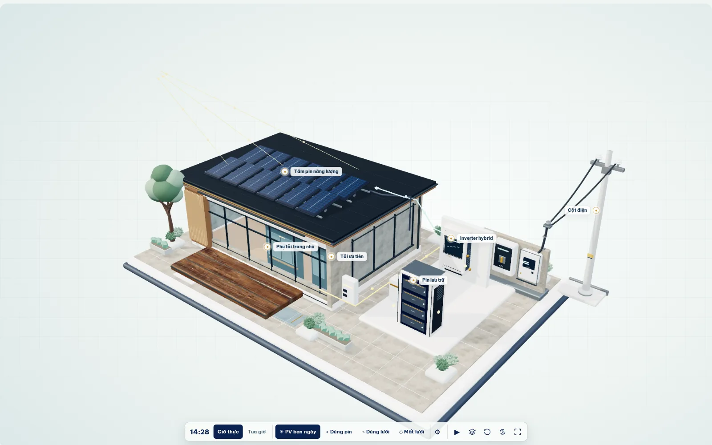

Bắt đầu từ mái nhà.
Từng tấm pin đón ánh nắng. Dòng DC được biến đổi qua inverter để cung cấp điện cho các phụ tải.
Mô hình 3D với ánh nắng có hướng, công tơ, bộ chuyển nguồn, tủ điện và tải ưu tiên. Khám phá cả luồng DC, AC và cách ly điện lưới trong chế độ dự phòng.
Quan sát một hệ thống điện mặt trời hoạt động theo nguyên lý. Kéo xoay nhà, chạm vào thiết bị hoặc cuộn để khám phá.

Từng tấm pin đón ánh nắng. Dòng DC được biến đổi qua inverter để cung cấp điện cho các phụ tải.
Tìm hiểu inverter, hệ pin lưu trữ và tủ điện. Chọn thiết bị để quan sát trực tiếp trên ngôi nhà.
Điện lưới đến từ cột điện, đi qua công tơ và bảo vệ. Khi mất điện, chỉ nhánh backup đủ điều kiện mới cấp tải ưu tiên.
Sơ đồ khối luồng điện AC/DC mang tính khái niệm, đối chiếu với mô hình 3D phía trên. Chọn thiết bị để phóng đến vị trí tương ứng.
DC từ mái PV được inverter chuyển sang AC cấp phụ tải. Lưới kết nối nhưng không mô phỏng nhập điện.